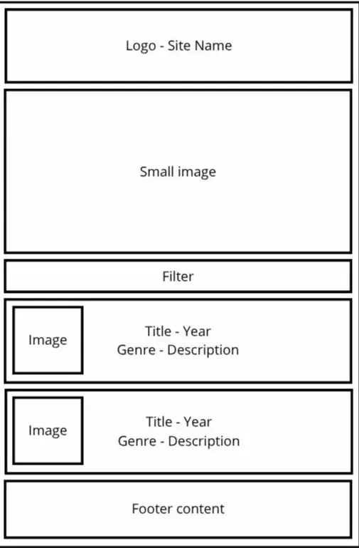
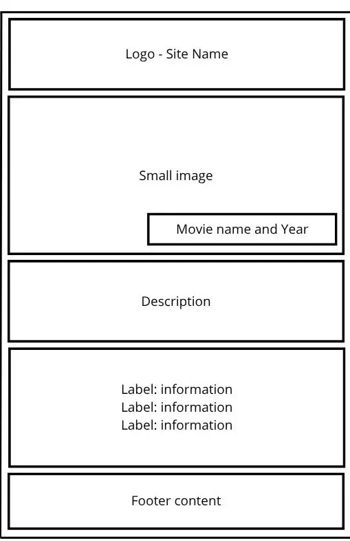
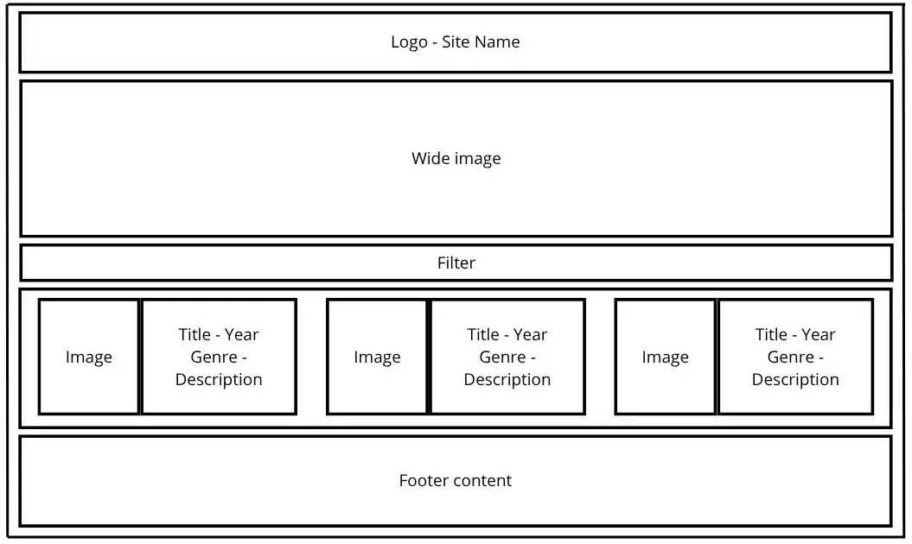
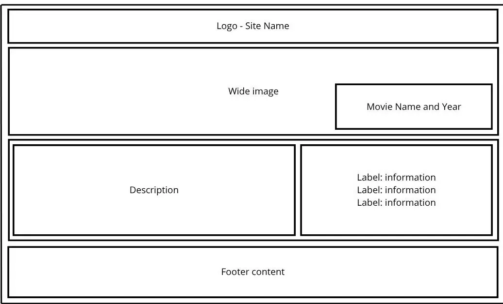

Site Name
Must-watch Argentine Films
■ This name clearly states the content of the Website: a list of Argentine films that must be watched; though, it is not limited to that.
■ Possible domain name: mw-films-argentina.org
Site Purpose
■ This site provides a list of famous Argentine films and relevant information. Main page contains a list of movies with brief descriptions that can be filtered by genre. It also contains a newsletter subscription form. Films's individual pages contain more information on plot, actors, makers, etc.
Scenarios
■ Which argentine movies are famous/good?
■ Are there good/famous argentine movies?
■ Note: previous scenarios could be applied to latin american, south american and hispanic cinema.
■ Who are the most famous argentine actors?
■ What is the best rated argentine movie?
Color Schema
■ #b63300 | Main color, header and footer background
■ #ffffff | Background color and main heading
□ #feeada | Card background, sections and divisions
■ #2d1100 | Subheadings, paragraphs and borders
■ #1d3c84 | Opposite for highlighting
Typography
Montserrat | Headings
Arvo | Paragraphs
Wireframes

Main page design for mobile view

Single movie page design for mobile view

Main page design in a wider view

Single movie page design in a wider view